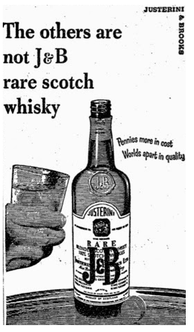
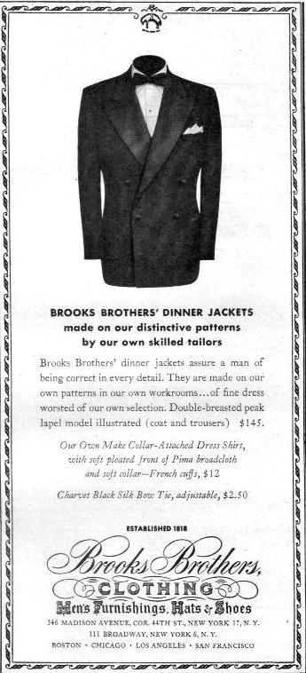

Blood Sausage Recipe to Die For
By: Evelyn Richards
Blood saugsage has a name that could be offputting to some, but those with a well refined palate, they will enjoy the complexities that come with cooking this equisite british treat. It would be nice to note before you start that eating blood sausage will not make you a vapmire, but there are other benefits as well. Blood can be extremely healthy: It’s rich in protein and minerals, such as iron and vitamin D
Continued on Page 4
Harry's
Financial District
 Price and I walk down Hanover Street in the darkest moments of twilight and as if guided by radar move silently toward Harry's. Timothy hasn't said anything since we left P & P. He doesn't even comment on the ugly bum that crouches beneath a Dumpster off Stone Street, though he does manage a grim wolf whistle toward a woman—big tits, blonde, great ass, high heels—heading toward Water Street. Price seems nervous and edgy and I have no desire to ask him what's wrong. He's wearing a linen suit by Canali Milano, a cotton shirt by Ike Behar, a silk tie by Bill Blass and cap-toed leather lace-ups from Brooks Brothers. I'm wearing a lightweight linen suit with pleated trousers, a cotton shirt, a dotted silk tie, all by Valentino Couture, and perforated cap-toe leather shoes by Allen-Edmonds. Once inside Harry's we spot David Van Patten and Craig McDermott at a table up front. Van Patten is wearing a double-breasted wool and silk sport coat, button-fly wool and silk trousers with inverted pleats by Mario Valentino, a cotton shirt by Gitman Brothers, a polka-dot silk tie by Bill Blass and leather shoes from Brooks Brothers. McDermott is wearing a woven-linen suit with pleated trousers, a button-down cotton and linen shirt by Basile, a silk tie by Joseph Abboud and ostrich loafers from Susan Bennis Warren Edwards. The two are hunched over the table, writing on the backs of paper napkins, a Scotch and a martini placed respectively in front of them. They wave us over. Price throws his Tumi leather attaché case on an empty chair and heads toward the bar. I call out to him for a J&B on the rocks, then sit down with Van Patten and McDermott. “Hey Bateman,” Craig says in a voice that suggests this is not his first martini. “Is it proper to wear tasseled loafers with a business suit or not? Don't look at me like I'm insane.” “Oh shit, don't ask Bateman,” Van Patten moans, waving a gold Cross pen in front of his face, absently sipping from the martini glass. “Van Patten?” Craig says. “Yeah?” McDermott hesitates, then says “Shut up” in a flat voice. “What are you screwballs up to?” I spot Luis Carruthers standing at the bar next to Price, who ignores him utterly. Carruthers is not dressed well: a four-button double- breasted wool suit, I think by Chaps, a striped cotton shirt and a silk bow tie plus horn- rimmed eyeglasses by Oliver Peoples. “Bateman: we're sending these questions in to GQ,” Van Patten begins. Luis spots me, smiles weakly, then, if I'm not mistaken, blushes and turns back to the bar. Bartenders always ignore Luis for some reason. “We have this bet to see which one of us will get in the Question and Answer column first, and so now I expect an answer. What do you think?” McDermott demands. “About what?” I ask irritably. “Tasseled loafers, jerk-off,” he says. “Well, guys...” I measure my words carefully. “The tasseled loafer is traditionally a casual shoe...” I glance back at Price, wanting the drink badly. He brushes past Luis, who offers his hand. Price smiles, says something, moves on, strides over to our table. Luis, once more, tries to catch the bartender's attention and once more fails. “But it's become acceptable just because it's so popular, right?” Craig asks eagerly. “Yeah.” I nod. “As long as it's either black or cordovan it's okay.” “What about brown?” Van Patten asks suspiciously.I think about this then say, “Too sporty for a business suit.” “What are you fags talking about?” Price asks. He hands me the drink then sits down, crossing his legs. “Okay, okay, okay,” Van Patten says. “This is my question. A two-parter...” He pauses dramatically. “Now are rounded collars too dressy or too casual? Part two, which tie knot looks best with them?” A distracted Price, his voice still tense, answers quickly with an exact, clear enunciation that can be heard over the din in Harry's. “It's a very versatile look and it can go with both suits and sport coats. It should be starched for dressy occasions and a collar pin should be worn if it's particularly formal.” He pauses, sighs; it looks as if he's spotted somebody. I turn around to see who it is. Price continues, “If it's worn with a blazer then the collar should look soft and it can be worn either pinned or unpinned. Since it's a traditional, preppy look it's best if balanced by a relatively small four-in-hand knot.” He sips his martini, recrossing his legs. “Next question?” “Buy the man a drink,” McDermott says, obviously impressed. “Price?” Van Patten says. “Yes?” Price says, casing the room. “You're priceless.” “Listen,” I ask, “where are we having dinner?” “I brought the trusty Mr. Zagat,” Van Patten says, pulling the long crimson booklet out of his pocket and waving it at Timothy. “Hoo-ray,” Price says dryly. “What do we want to eat?” Me. “Something blond with big tits.” Price. “How about that Salvadorian bistro?” McDermott. (...) “Men,” I announce: “Look who approaches.”“Who?” Price won't turn his head. “Hint,” I say. “Biggest weasel at Drexel Burnham Lambert.” “Connolly?” Price guesses. “Hello, Preston,” I say, shaking Preston's hand. “Fellows,” Preston says, standing over the table, nodding to everyone. “I'm sorry about not making dinner with you guys tonight.” Preston is wearing a double-breasted wool suit by Alexander Julian, a cotton shirt and a silk Perry Ellis tie. He bends down, balancing himself by putting a hand on the back of my chair. “I feel really bad about canceling, but commitments, you know.” Price gives me an accusatory look and mouths “Was he invited?” I shrug and finish what's left of the J&B. “What did you do last night?” McDermott asks, and then, “Nice threads.” “Who did he do last night?” Van Patten corrects. “No, no,” Preston says. “Very respectable, decent evening. No babes, no blow, no brew. Went to The Russian Tea Room with Alexandra and her parents. She calls her father—get this—Billy. But I'm so fucking tired and only one Stoli.” He takes off his glasses (Oliver Peoples, of course) and yawns, wiping them clean with an Armani handkerchief. “I'm not sure, but I think our like weird Orthodox waiter dropped some acid in the borscht. I'm so fucking tired.” “What are you doing instead?” Price asks, clearly uninterested. “Have to return these videos, Vietnamese with Alexandra, a musical, Broadway, something British,” Preston says, scanning the room. “Hey Preston,” Van Patten says. “We're gonna send in the GQ questions. You got one?” “Oh yeah, I've got one,” Preston says. “Okay, so when wearing a tuxedo how do you keep the front of your shirt from riding up?” Van Patten and McDermott sit silently for a minute before Craig, concerned and his brow creased in thought, says, 'That's a good one.” “Hey Price,” Preston says. “Do you have one?” “Yeah,” Price sighs. “If all of your friends are morons is it a felony, a misdemeanor or an act of God if you blow their fucking heads off with a thirty-eight magnum?” “Not GQ material,” McDermott says. “Try Soldier of Fortune.” “Or Vanity Fair.” Van Patten. “Who is that?” Price asks, staring over at the bar. “Is that Reed Robison? And by the way, Preston, you simply have a tab with a buttonhole sewn into the front of the shirt, which can then be attached by a button to your trousers; and make sure that the stiff pleated front of the shirt doesn't extend below the waistband of your trousers or it will rise up when you sit down now is that jerk Reed Robison? It looks a hell uva lot like him.” Stunned by Price's remarks, Preston slowly turns around, still on his haunches, and after he puts his glasses back on, squints over at the bar. “No, that's Nigel Morrison.” “Ah,” Price exclaims. “One of those young British faggots serving internship at...?” “How do you know he's a faggot?” I ask him. “They're all faggots.” Price shrugs. “The British.” “How would you know, Timothy?” Van Patten grins. “I saw him fuck Bateman up the ass in the men's room at Morgan Stanley,” Price says. I sigh and ask Preston, “Where is Morrison interning?” “I forget,” Preston says, scratching his head. “Lazard?” “Where?” McDermott presses. “First Boston? Goldman?” “I'm not sure,” Preston says. “Maybe Drexel? Listen, he's just an assistant corporate finance analyst and his ugly, blacktooth girlfriend is in some dinky rat hole doing leveraged buy outs.” “Where are we eating?” I ask, my patience at an all-time low. “We need to make a reservation. I'm not standing at some fucking bar.” “What in the fuck is Morrison wearing?” Preston asks himself. “Is that really a glen- plaid suit with a checkered shirt?” “That's not Morrison,” Price says. “Who is it then?” Preston asks, taking his glasses off again. “That's Paul Owen,” Price says. “That's not Paul Owen,” I say. “Paul Owen's on the other side of the bar. Over there.” Owen stands at the bar wearing a double-breasted wool suit. “He's handling the Fisher account,” someone says. “Lucky bastard,” someone else murmurs. “Lucky Jew bastard,” Preston says. “Oh Jesus, Preston,” I say. “What does that have to do with anything?” “Listen, I've seen the bastard sitting in his office on the phone with CEOs, spinning a fucking menorah. The bastard brought a Hanukkah bush into the office last December,” Preston says suddenly, peculiarly animated. “You spin a dreidel, Preston,” I say calmly, “not a menorah. You spin a dreidel.” “Oh my god, Bateman, do you want me to go over to the bar and ask Freddy to fry you up some fucking potato pancakes?” Preston asks, truly alarmed. “Some... latkes?” “No,” I say. “Just cool it with the anti-Semitic remarks.” “The voice of reason.” Price leans forward to pat me on the back. “The boy next door.” “Yeah, a boy next door who according to you let a British corporate finance analyst intern sodomize him up the ass,” I say ironically. “I said you were the voice of reason,” Price says. “I didn't say you weren't a homosexual.” “Or redundant,” Preston adds. “Yeah,” I say, staring directly at Price. “Ask Meredith if I'm a homosexual. That is, if she'll take the time to pull my dick out of her mouth.” “Meredith's a fag hag,” Price explains, unfazed, “that's why I'm dumping her.” “Oh wait, guys, listen, I got a joke.” Preston rubs his hands together. “Preston,” Price says, “you are a joke. You do know you weren't invited to dinner. By the way, nice jacket; nonmatching but complementary.” “Price, you are a bastard, you are so fucking mean to me it hurts,” Preston says, laughing. “Anyway, so JFK and Pearl Bailey meet at this party and they go back to the Oval Office to have sex and so they fuck and then JFK goes to sleep and...” Preston stops. “Oh gosh, now what happens... Oh yeah, so Pearl Bailey says Mr. President I wanna fuck you again and so he says I'm going to sleep now and in... thirty-no, wait...” Preston pauses again, confused. “Now... no, sixty minutes... no... okay, thirty minutes I'll wake up and we'll do it again but you've got to keep one hand on my cock and the other on my balls and she says okay but why do I have to keep one hand on your dick and one... one hand on your balls... and...” He notices that Van Patten is idly doodling something on the back of a napkin. “Hey Van Patten—are you listening to me?” “I'm listening,” Van Patten says, irritated. “Go ahead. Finish it."